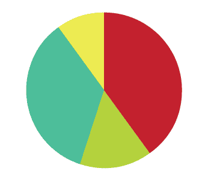

The super water-tap is an enhancement of a regular water-tap. It was made in collaboration with Nir Bet-Av and Sarit Hayat in IDHO course at Holon Institute of Technology HIT.
Concept – To create a water tap that uses sonification to indicate the water temperature. Moreover, the water tap is equipped with two LEDs, red and blue, that also help to indicate the temperature visually.
Method – A sensor is connected to a Perspex add-on that sits on the water-tap. In this add-on, we created an electrical circuit that is activated when water flows. It connects electrically according to the salinity of the water. The electric mechanism is connected to the computer mixing sounds to create the correct atmosphere.
Insights – After further research we found that the temperature of water in the shower is between 15o C and 45o C. 15o C-23o C is too cold and not pleasant for people; 24o C-36o C is cold, but acceptable for a cold shower. The most sensitive temperature for people is between 36o C-40o C. At this range, people feel each tiny change in the temperature. (Above 40o C is too hot.)
We checked a variety of sounds, and surveyed 60 subjects. In the survey, the subjects were asked to listen to a sound and state whether it's cold of hot. We examined the possibility of using real music. The results showed that most people consider electronic music cold music – because it is created not by humans, but by computers. Hot music includes singers, live performances, and acoustic musical instruments. We also discovered that tools that create a beat like drums are also considered cold. Finally, we created the perfect sounds for us and checked whether they mix well as a combination of sounds in that experience. The sound had to be dominant because a strong flow of water creates lots of white noise that fills many frequencies.
Examples – People who tried the super water-tap told us that it would be a convenient device for when you are bathing your baby and the temperature changes. People can be more aware of the change when they hear it. The device would also be useful when it's cold and you open the tap to take a shower. It is not pleasant to step into the shower when the water is too cold/hot. The super water tap would enable you to be familiar with the sound you like, and enter the shower when it's right for you.
Project finished on January, 2009

{kind=link}